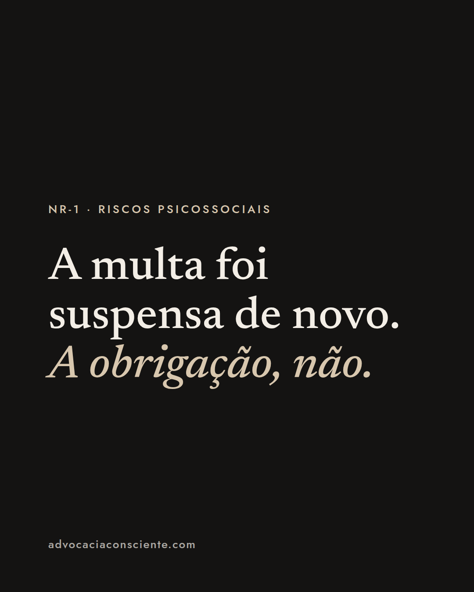

No fim de setembro, o STF prorrogou por mais 90 dias a suspensão das multas ligadas aos riscos psicossociais da NR-1. Desde então, a pergunta que mais ouço de sócios e gestores é se dá para esperar dezembro. A minha resposta é não, e explico por quê.
O que o STF decidiu
A NR-1 passou a exigir a gestão dos riscos psicossociais em 26 de maio de 2026. Em junho, na ADPF 1316, proposta pela Confederação Nacional dos Estabelecimentos de Ensino (Confenen), o ministro André Mendonça suspendeu por 90 dias as multas e demais sanções administrativas ligadas a essas regras. O argumento central foi a falta de critérios claros sobre o que se espera do empregador e sobre as penalidades. O ministro também abriu uma conciliação no STF entre governo e entidades empresariais.
Em agosto, o Plenário confirmou a decisão por unanimidade. No fim de setembro, como a conciliação ainda não terminou, a suspensão foi prorrogada por mais 90 dias, até o fim de dezembro.
O que continua valendo
A decisão não revogou a norma. O que está suspenso é a multa administrativa. Continuam valendo a obrigação de identificar, avaliar, registrar e controlar os fatores de risco psicossocial no Programa de Gerenciamento de Riscos (PGR), as regras da NR-17, a responsabilidade trabalhista e civil por adoecimento ligado ao trabalho e a atuação do Ministério Público do Trabalho.
Na prática: se alguém adoecer por causa da organização do trabalho, a falta de multa não protege o escritório de uma ação trabalhista.
Multa suspensa não é custo suspenso
Em 2025, a Previdência Social concedeu 546.254 benefícios por incapacidade temporária por transtornos mentais e comportamentais, 15,66% a mais que em 2024. Cada afastamento significa trabalho parado, prazos redistribuídos e uma equipe mais sobrecarregada.
O custo maior, porém, costuma ficar escondido. No Reino Unido, a Deloitte estimou que a saúde mental custa £51 bilhões por ano aos empregadores. Desse total, £24 bilhões vêm do presenteísmo: a pessoa está no escritório, mas rende menos. Na advocacia, isso aparece como retrabalho, erro em prazo e horas que não viram faturamento.
Há também o custo de perder gente. Nos Estados Unidos, a NALP estima que substituir um advogado associado custa de US$ 200 mil a US$ 500 mil, somando recrutamento, treinamento e produtividade perdida. E o estudo mais recente da American Bar Association, de setembro de 2026, com cerca de 37 mil advogados, encontrou 47,4% com nível alto de burnout.
O escritório de advocacia também é empregador
Nós orientamos clientes sobre a NR-1. Mas o escritório com estagiários, secretárias, paralegais e advogados contratados está sujeito à mesma norma. E os fatores de risco da nossa profissão são conhecidos: prazos curtos, metas de horas, disponibilidade constante, conflito como matéria-prima do trabalho.
Como usar os próximos 90 dias
O primeiro passo é mapear: conversar com a equipe e aplicar um questionário para entender onde estão a sobrecarga, os conflitos e a falta de autonomia. O segundo é registrar o que foi encontrado no PGR, com data. O terceiro é agir sobre a organização do trabalho, e não só oferecer palestras: distribuição de prazos, regras de mensagens fora do horário, pausas e canais de escuta. O quarto é medir antes e depois, com instrumentos validados como a Escala de Estresse Percebido (PSS-10) e o Copenhagen Burnout Inventory.
Quando as multas voltarem, quem documentou terá meses de histórico para mostrar. E, mais importante, terá uma equipe que trabalha melhor.
No Programa Advocacia Consciente (PAC), trabalho exatamente essa etapa de medir e agir com escritórios e instituições. Se quiser entender como funciona, os detalhes estão na página do programa.
Leia também: Burnout na advocacia: sinais que não devem ser ignorados · NR-1 em escritórios de advocacia
Perguntas frequentes
A NR-1 foi suspensa?
Não. Estão suspensas só as multas e sanções administrativas ligadas aos riscos psicossociais, até o fim de dezembro de 2026. A norma continua em vigor.
Escritório de advocacia precisa cumprir a NR-1?
Sim, se tiver empregados. A obrigação de gerenciar riscos ocupacionais, incluindo os psicossociais, vale para empregadores em geral.
O que fazer enquanto as multas estão suspensas?
Mapear os fatores de risco, registrá-los no PGR, agir sobre a organização do trabalho e medir os resultados.
Fontes
- Fenacon: STF suspende sanções da NR-1 e abre conciliação (ADPF 1316)
- FINDES: STF confirma suspensão de penalidades da NR-1 (agosto de 2026)
- Gazeta do Povo: Mendonça mantém suspensão das multas da NR-1
- Previdência Social: 546.254 benefícios por incapacidade temporária por transtornos mentais em 2025 (janeiro de 2026)
- Deloitte UK: o custo da saúde mental para os empregadores (2024)
- Thomson Reuters: custo da rotatividade de advogados, com dados da NALP
- American Bar Association: estudo sobre saúde mental de advogados (setembro de 2026)

Advogada (OAB/SP e Ordem dos Advogados de Portugal), formada também em Ciências Biológicas, mestre em Mindfulness e Compaixão pela Universidad de Zaragoza. Instrutora de mindfulness, criadora do Programa Advocacia Consciente® e autora do livro Advocacia Consciente (Freitas Bastos).